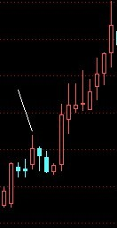
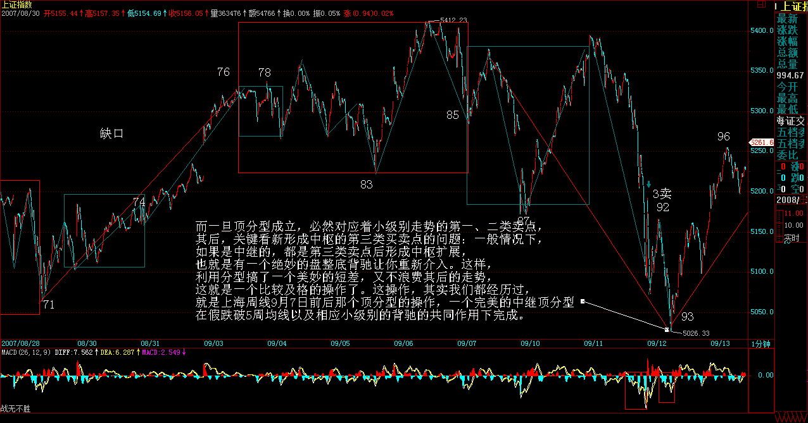
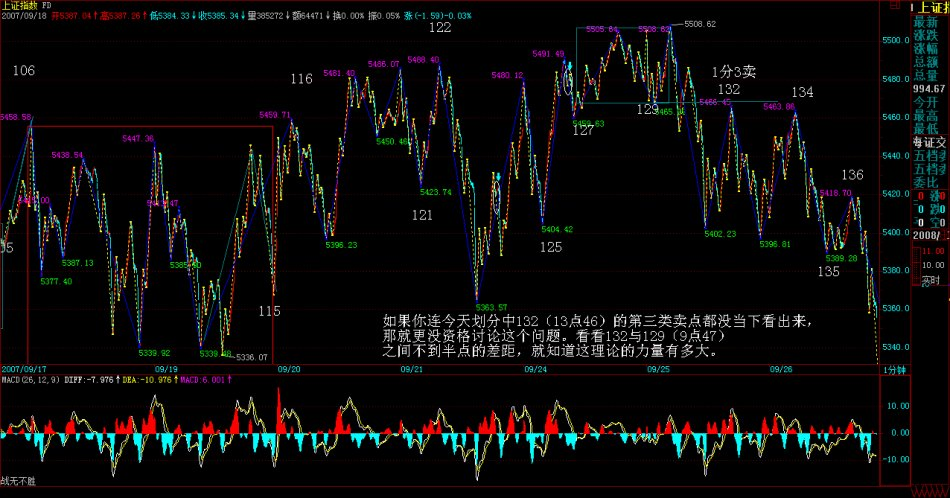
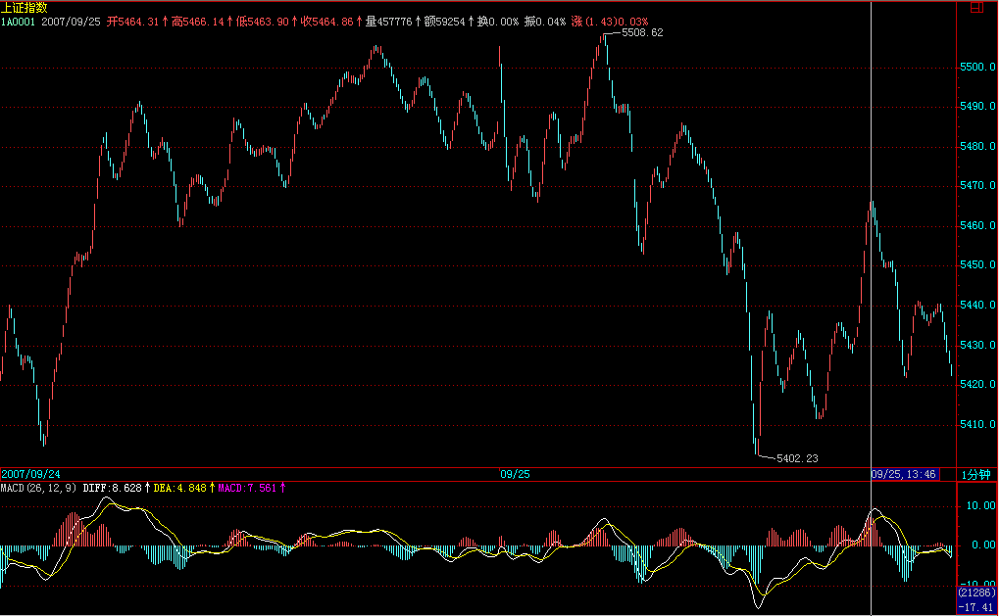
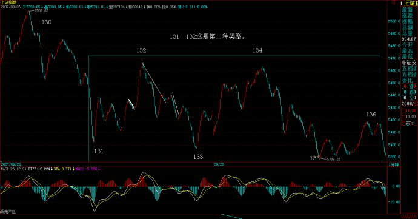

|
 |
教你炒股票82：分型结构的心理因素
(2007-09-24
21:31:06)
走势反映的是人的贪嗔痴疑慢，如果你能通过走势当下的呈现，而观照其中参与的心理呈现，就等于看穿了市场参与者的内心。心理，不是虚无飘渺的，最终必然要留下痕迹，也就是市场走势本身。而一些具有自相似性的结构，就正好是窥测市场心理的科学仪器。
注意，分型不是分形，分形理论，是数学的一个分支，有人用这分支的一些研究成果硬套到市场走势上，得出来的结论，没有太大意义。本ID理论的逻辑，是直接来源于市场走势本身，而不是一个先验的，市场之外的数学理论。至于这现实的市场逻辑显现出数学理论的结构，那是另一回事情。
世界，本来就是数学的。但本ID的理论，不是任何原有数学理论的应用，而是市场本身现实逻辑的直接显现，这是一个极为关键的区别。
显然，一个顶分型之所以成立，是卖的分力最终战胜了买的分力，而其中，买的分力有三次的努力，而卖的分力，有三次的阻击。用最标准的已经过包含处理的三K线模型：第一根K线的高点，被卖分力阻击后，出现回落，这个回落，出现在第一根K线的上影部分或者第二根K线的下影部分，而在第二根K线，出现一个更高的高点，但这个高点，显然与第一根K线的高点中出现的买的分力，一定在小级别上出现力度背驰，从而至少制造了第二根K线的上影部分。最后，第三根K线，会再次继续一次买的分力的攻击，但这个攻击，完全被卖的分力击败，从而不能成为一个新高点，在小级别上，大致出现一种第二类卖点的走势。
由上可见，一个分型结构的出现，如同中枢，都是经过一个三次的反复心理较量过程，只是中枢用的是三个次级别。所谓一而再、再而三，三而竭，所以一个顶分型就这样出现了，而底分型的情况，反过来就是。
现在，我们可以深入分析这三根K线的不同情况。首先，一个完全没有包含关系的分型结构，意味着市场双方都是直截了当，没有太多犹豫。包含关系（只要不是直接把阳线以长阴线吃掉）意味着一种犹豫，一种不确定的观望等，一般在小级别上，都会有中枢延伸、扩展之类的东西。
其次，还是用没有包含关系的顶分型为例子。如果第一K线是一长阳线，而第二、三都是小阴、小阳，那么这个分型结构的意义就不大了，在小级别上，一定显现出小级别中枢上移后小级别新中枢的形成，一般来说，这种顶分型，成为真正顶的可能性很小，绝大多数都是中继的。例如，上海日线9月17、18、19这三根K线组成的顶分型结构。
但，如果第二根K线是长上影甚至就是直接的长阴，而第三根K线不能以阳线收在第二根K线区间的一半之上，那么该顶分型的力度就比较大，最终要延续成笔的可能性就极大了。例如上海日线6月18、19、20、21，里面有一个包含关系，但这包含关系是直接把阳线以长阴线吃掉，是最坏的一种包含关系。
一般来说，非包含关系处理后的顶分型中，第三根K线如果跌破第一根K线的底而且不能高收到第一根K线区间的一半之上，属于最弱的一种，也就是说这顶分型有着较强的杀伤力。例如上海日线5月28、29、30。
注：上涨中底分能否延续成笔观察分型3元素反之。
分型形成后，无非两种结构：一、成为中继型的，最终不延续成笔；二、延续成笔。对于后一种，那是最理想的，例如在日线上操作完，就等着相反的分型出来再操作了，中间可以去宠幸别的面首，这是效率最高的。而对于第一种情况，前面说过，可以看是否有效突破5周期的均线，例如对日线上的顶分型，是否有效跌破5日均线，就是一个判断顶分型类似走势很好的操作依据。
不过，还有更精确简单的，就是这分型所对应的小级别中枢里，是否出现第三类买卖点，而且其后是否出现中枢移动。例如，对于一个顶分型，该顶分型成立后，对于该分型区间在小级别里一定形成某级别的中枢，选择其中最大一个，例如日顶分型后，可以找到相应的5、1分钟中枢，一般最大的就是5分钟，30分钟没可能，因为时间不够。如果该5分钟中枢或1分钟中枢出现第三类卖点，并该卖点不形成中枢扩张的情形，那么几乎100%可以肯定，一定在日线上要出现笔了。
可以100%肯定的，要不出现笔并最终有效破坏该顶分型，那一定要出现某级别的第三类买点，否则就算有短时间的新高，也一定是假突破。所以结合小级别的中枢判断，顶分型是否延伸为笔，是可以当下一目了然的。
如果你能有效地分辨中继分型，那么你的操作就会有大的进步。
一般来说，可以把分型与小级别走势类型结合操作，例如日线与5分钟的。如果一个小级别的中枢震荡中连日K线都没出现顶分型结构，那么，这个中枢震荡就没必要走了，后者就算打短差也要控制好数量，因为，没有分型，就意味着走势没结束，随时新高，你急什么？而一旦顶分型成立，必然对应着小级别走势的第一、二类卖点，其后，关键看新形成中枢的第三类买卖点的问题：一般情况下，如果是中继的，都是第三类卖点后(娇注：3卖后盘背）形成中枢扩展，也就是有一个绝妙的盘整底背驰让你重新介入。这样，利用分型搞了一个美妙的短差，又不浪费其后的走势，这就是一个比较及格的操作了。

这操作，其实我们都经历过，就是上海周线9月7日前后那个顶分型的操作，一个完美的中继顶分型，在假跌破5周均线以及相应小级别的背驰的共同作用下完成。

注意，利用分型，例如顶分型，卖了以后一定要注意是否要回补，如果一旦确认是中继的，应该回补，否则就等着笔完成再说。
但一定要注意，中继顶分型后，如果其后的走势在相应小级别出现背驰或盘整背驰，那么下一顶分型，是中继的可能性将大幅度减少。中继分型，有点类似刹车，一次不一定完全刹住，但第一刹车后如果车速已明显减慢，证明刹车系统是有效的，那么第二次刹住的机会就极大了，除非你踩错，一脚到油门上去了。
都是月亮惹的祸（附录七古：中秋见月）(2007-09-25 15:49:49)
从上周就开始告诉各位，月儿圆，有震荡，昨天最后一句还特别强调“月亮圆了，注意短线震荡的加大”，因此，对今天的震荡，如果还把握不住，那只能证明，你确实不适宜短线操作，那就中线点，无所谓的。中线上，大盘的压力越来越大，如果不是有人为了新股护盘，今天可不止跌这么点。
至于本ID的理论有没有用，这个问题根本无须讨论，如果你连今天划分中132（13点46）的第三类卖点都没当下看出来，那就更没资格讨论这个问题。看看132与129（9点47）之间不到半点的差距，就知道这理论的力量有多大。


现在的人都很奇怪，似乎全世界的人都欠了他的，你考不上北大，那一定是老师的错，老师欠了你的。你学不会几何，那几何肯定错了，就如同今晚的月亮，都是他的错。本ID对这套逻辑从来没兴趣搭理，本ID又不是卖月饼的，过了今晚，本ID的理论依然框架着所有的股票走势，就如同三角形之和180度框架着欧几里德平面上的图形。
个股方面，说句梦话，千万别信：可以开始关注两只股票600319、000822，这都是基本面上有可能出现重大变化的。不过必须声明：由于目前大盘的位置十分危险，对个股的介入，一定要在大级别的买卖点。有些股票，如果技术好的，可以不断震荡减低成本去介入，例如600078。毕竟现在不是3000点，1000点，没有什么便宜的价位了，如果成本没本事降下来，最好就什么都别介入，等大盘暴跌再说。如果有那本事，那就无所谓了。
无聊的股票，就不说了，这里有本ID的七古旧作一首，祝各位中秋好。补充一句，如果连平水韵都没搞明白，就不要批评本ID的韵不对了，本ID的七古都从来不借邻韵，别说律诗了。
可以不相信月饼，但一定要相信月亮(2007-09-26 15:56:37)
月亮的力量有多大，各位这两天也见识了。可以不相信月饼，但一定要相信月亮。为什么？连地球上的潮汐都要抄袭月亮，那破股票难道比潮汐还要潮汐？昨天已经明确告诉“如果不是有人为了新股护盘，今天可不止跌这么点”，昨天没跌够，今天继续，就这么简单。
今天早上的上攻，一没有突破昨天的第三类卖点，(3卖后盘背能否逆转成中继分型还得看有无3买）二反而是形成标准的顶分型第三根K线的上冲，不管你相信不相信本ID的理论，反正后面的走势，如教科书般。现在的走势十分简单，一个1分钟的走势正离开前面那5分钟中枢，这1分钟走势什么时候能完成，就看后面的走势了，而完成以后的回拉才是最重要的，是否能形成第三类卖点，这才是最近走势的关键，如果形成，那这两天，最多只能算田亮的1米板，后面是表演3米还是10米的，这对于观众，其实反而已经不重要了。
个股方面，今天水井坊终于像水井坊应该那样水井坊了一把，看看这股票，就知道什么叫折腾。几乎一年，就在这里搞，为什么？就是因为里面有着N伙人，还都看好，所以就互相折腾，这次是真是假？天知道。为什么？因为后面谁只要一先动手，N方又一起开始折腾。其实，这个游戏很好玩，只是浪费了一只质地如此好的股票。
不过，好股票最终都要发光的。就像000999，从本ID在这里开始讲到现在，快10个月了，开始6元抢东西，然后在12元上下和汉奸基金的斗法，后来又涌入一群无聊人在15元上，东搞西搞，中间传闻漫天飞，结果怎么样？请看看新进来的大股东掏了多少钱，一个掏了这么多钱的人，要干什么大事，难道还有什么疑问？本ID反复说要海枯石烂，但真正干起来，估计很多人就会被市场的波动所迷惑了。
每一只股票，都是一个故事，说不完。做完一只股票，你就成了有故事的人了。
再次提醒，昨天说那两只股票，如果大盘有大问题，也会跟着调整的，但由于基本面上潜在大变化，所以市场如果大波动，将提供一个好的介入时机。本ID说的股票，从来都是中长线角度的，有足够的时间让你介入，关键是看好买卖点。
今天可以回答问题到4点半。
缠中说禅：
2007-09-26
16:02:33 [举报]
[匿名] 月儿 2007-09-26 15:59:37
缠中说禅2007-09-26 16:07:35 [举报]
绿幽灵2007-09-26 16:04:22
缠好～
中枢虽然看得懂了,但是运用起来一点也不着边际,唉!!还有一个,明明看起来是背驰了,买进却又再跌,为啥呢? 请首先要确定你的明明是正确的，事实上，很多所谓明明的背驰，根本就不是。很多人，连中枢、走势类型、级别都没搞清楚，就分析背驰，这有可能准确吗？ [匿名] 新浪网友 2007-09-26 16:07:25
缠子：在看高级别K线图时，是应该把低级别图上的分段转过去还是重新分笔找线段？有时候这两种做法的分段是不一致的
==
为什么要一致？低级图上用中枢、走势类型。高级图上用分型，线段，等于有两套有用的工具去分析同一走势，这是天大的好事。
缠中说禅2007-09-26 16:14:21 [举报]
[匿名] 空言 2007-09-26 16:10:47
相信月亮,是不是每到农历十五前就清仓啊 哪里有这么机械的，但如果月亮还带上一个背驰、分型之类的东西，那当然就有效了。
缠中说禅2007-09-26 16:17:07 [举报]
[匿名] 新浪网友 2007-09-26 16:14:11
是不是买高价股更安全，尤其是上百元的？
==
只能说，高价的，散户都走了，杠铃举起来轻松点。但如果特别大的调整，谁都不会硬抗，除非脑子有水。
缠中说禅2007-09-26 16:18:17 [举报]
[匿名] 50年以前 2007-09-26 16:15:47
老师好，对今天线段划分有疑问，1346上去那一段并没有破坏130向下段的最后一笔，所以我觉得不应该单独画成一段，也就是131段应该是图上的133的位置，请老师明示
==
这是第二种类型。

缠中说禅2007-09-26 16:20:07 [举报]
[匿名] 新浪网友 2007-09-26 16:16:14
不知636年线会否有支撑。持有三个月了。
==
这种思维要不得，不要考虑什么支撑位置。看图形本身。而且，本ID不是一早说过，连半年线都没上，散户没必要参与。但这股票，中长线肯定是好股票，不过，最近和水井坊前期一样，进入一个怪圈。
缠中说禅2007-09-26 16:22:40 [举报]
[匿名] 新浪网友 2007-09-26 16:19:31
缠中说禅2007-09-26 16:25:55 [举报]
[匿名] 夜雨 2007-09-26 16:07:59
三九的走势就是教科书现场版，从去年到今年的走势是一部还未完成的作品，跟000858从20006年初到现在的走势都是主流资金的作品，他们有参照作用。
这样的公告，早在主力的意料之中，昨天有几人会在前几天卖了之后买回来呢？一般人，都会想今天确认了再买的，可再也不给机会了。所以我们能做的就是持有，逢低加仓。
说实话，三九我是从年前10元买入的，但仓位很少。到530低点加仓，四个月盘整中，有钱赚了，我就加一些，这一次18元加仓，21.5元再加仓。现在已经是最初投入的10倍了。自己认为，陪同他一路走来。是一次成功的操作了，对意志，对持股，对技术，都得到很大的提高。
谢谢姐姐，送给我最好的中秋节礼物，能对我在999的操作，发一朵大红花吗？
===
当然可以，大红花。成功操作一只股票，就是对自己心态最好的锻炼。其实，每一只股票的故事都大同小异，就如同每一个故事，归根结底，都只是故事般平常。
缠中说禅2007-09-26
16:29:45 [举报]
年年一变三 2007-09-26 16:25:28
请问缠主，这几天钢铁板块已经调整得比较厉害了，若再碰到大盘跳水，它能独善其身吗？盼复！谢谢！！
==
涉及预测的问题，本ID都没兴趣。应该培养这样的习惯，就是你的眼光，只投向有买点的股票。
股票这面首想被宠幸，这很简单，用买点来搔首弄姿就可以。
|
|
|
|